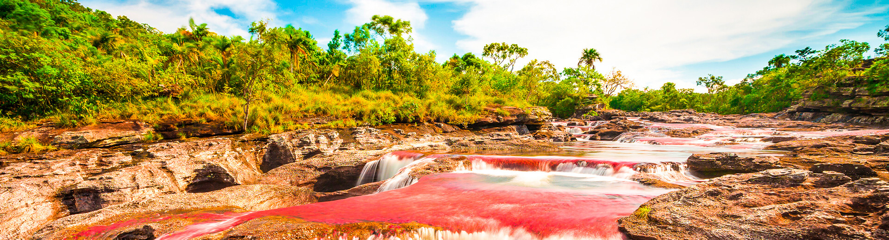

Caño Cristales es un rio ubicado en la Sierra de La Macarena, en el departamento del Meta, Colombia. Es conocido mundialmente como el rio de los cinco colores o el rio mas hermoso del mundo, debido al espectacular fenomeno natural que ocurre en sus aguas entre los meses de julio y noviembre.
Durante esa temporada, una planta acuatica endemica llamada Macarenia clavigera tine el fondo del rio de un intenso color rojo y rosado, que se combina con el amarillo de la arena, el verde de las algas, el azul del agua y el negro de las rocas, creando una paleta de colores unica en el planeta.
El secreto detras de los colores de Caño Cristales es la Macarenia clavigera, una planta acuatica que solo crece en este rio y en muy pocos lugares del mundo. Esta planta necesita condiciones muy especificas de luz, temperatura y nivel del agua para florecer y producir su caracteristico color rojo intenso.
El fenomeno ocurre unicamente entre julio y noviembre porque en esa epoca el nivel del agua es el adecuado para que la planta reciba suficiente luz solar. En temporada de lluvias el rio sube demasiado y la planta no puede fotosintentizar. En verano el rio baja tanto que la planta se seca. Solo en esa ventana de tiempo se puede ver el espectaculo de colores.
La Sierra de La Macarena donde se encuentra Caño Cristales es una de las zonas con mayor biodiversidad del mundo. Es un punto de encuentro entre cuatro grandes ecosistemas colombianos: la Amazonia, la Orinoquia, los Andes y el Choco Biogeografico. Esta confluencia crea una diversidad biologica extraordinaria.
En sus alrededores habitan mas de 400 especies de aves, 10 especies de primates, anacondas, dantas, jaguares y cientos de especies de peces e insectos. La vegetacion incluye desde selvas tropicales hasta sabanas y tepuyes, que son mesetas de roca antigua con vegetacion unica.
Caño Cristales solo es accesible en avioneta desde Villavicencio o Bogota hasta el pueblo de La Macarena. No hay carretera que llegue hasta alli. El vuelo desde Villavicencio dura aproximadamente 45 minutos y desde Bogota cerca de una hora y media.
Desde La Macarena se hace un recorrido en lancha por el rio Duda y luego una caminata hasta el caño. El recorrido completo puede durar entre 2 y 4 horas dependiendo del punto del rio que se visite. Es obligatorio ir con un guia certificado y el ingreso esta regulado por Parques Nacionales de Colombia.
Esta prohibido usar bloqueador solar, repelente quimico o cualquier producto que pueda contaminar el agua del rio. Solo se permiten productos biodegradables. Tampoco se puede ingresar con comida al area del caño, ni tocar o pisar las plantas del fondo del rio para no dañarlas.
Se recomienda reservar con bastante anticipacion ya que el cupo diario de visitantes es muy limitado para proteger el ecosistema. Los tours generalmente incluyen alojamiento en La Macarena, alimentacion, guia y transporte local. La mejor epoca para visitar es entre agosto y octubre cuando los colores estan en su punto maximo.